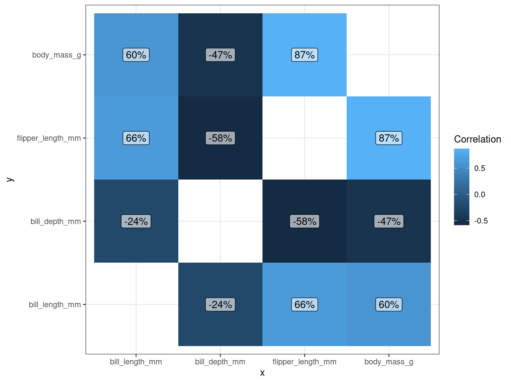
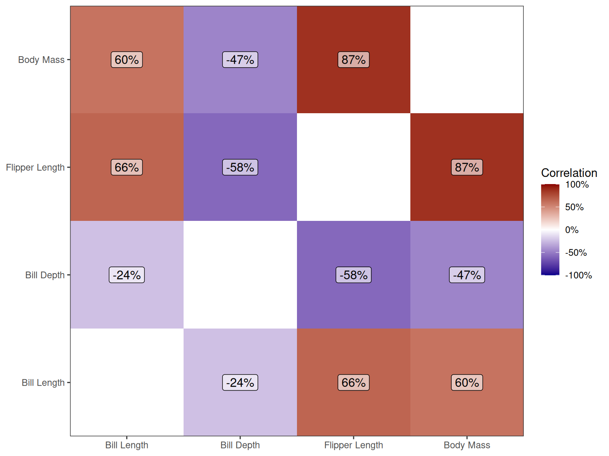
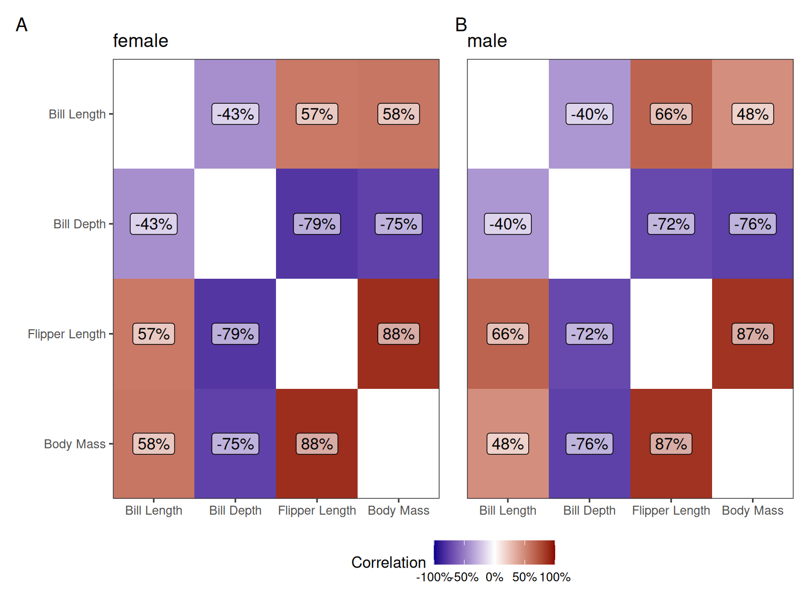
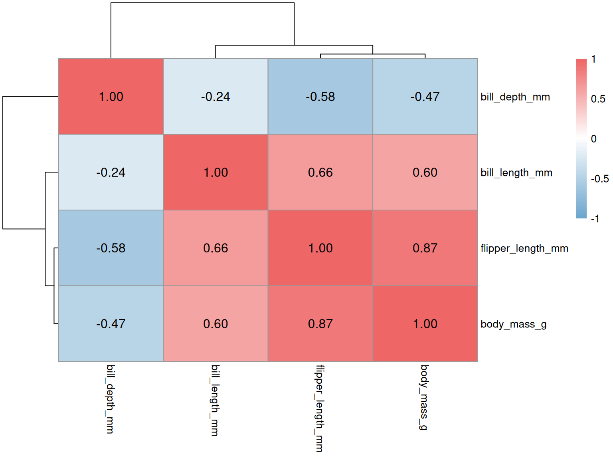
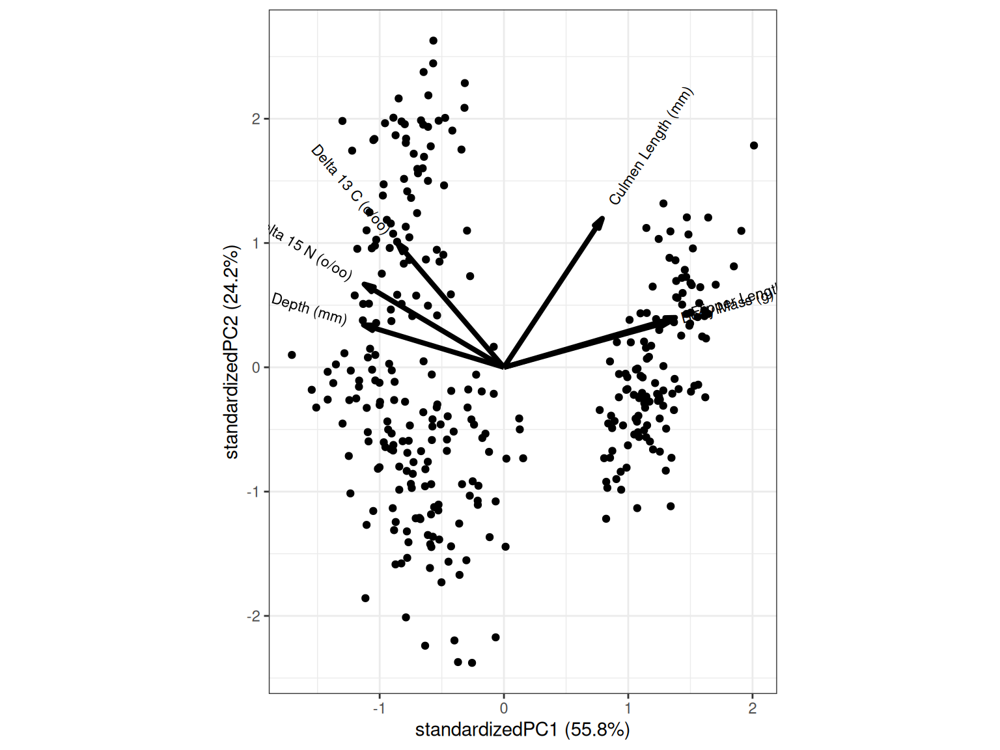
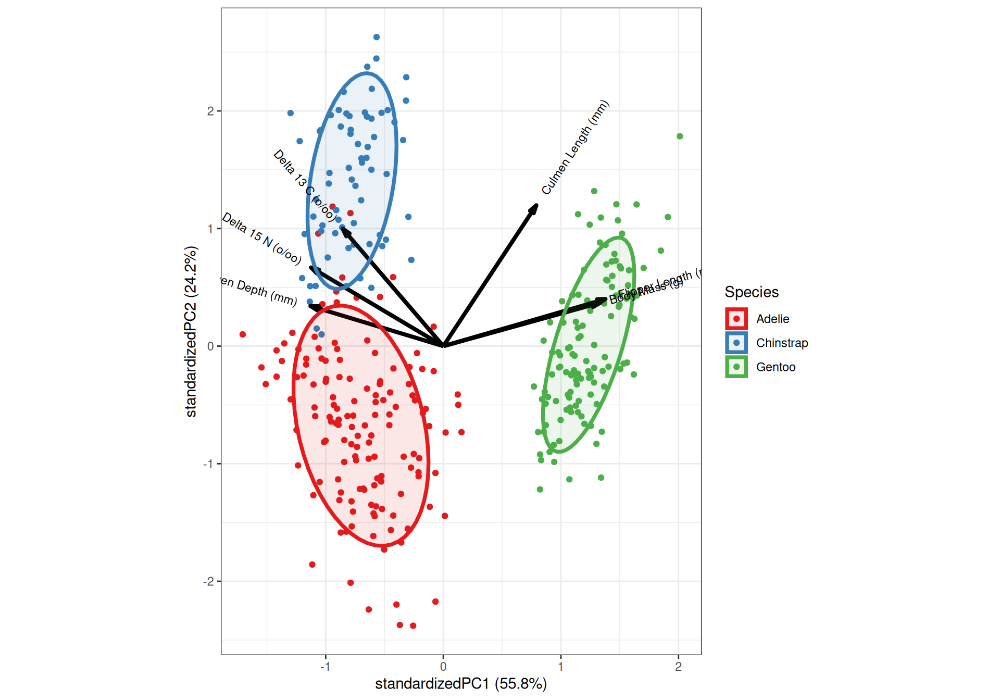
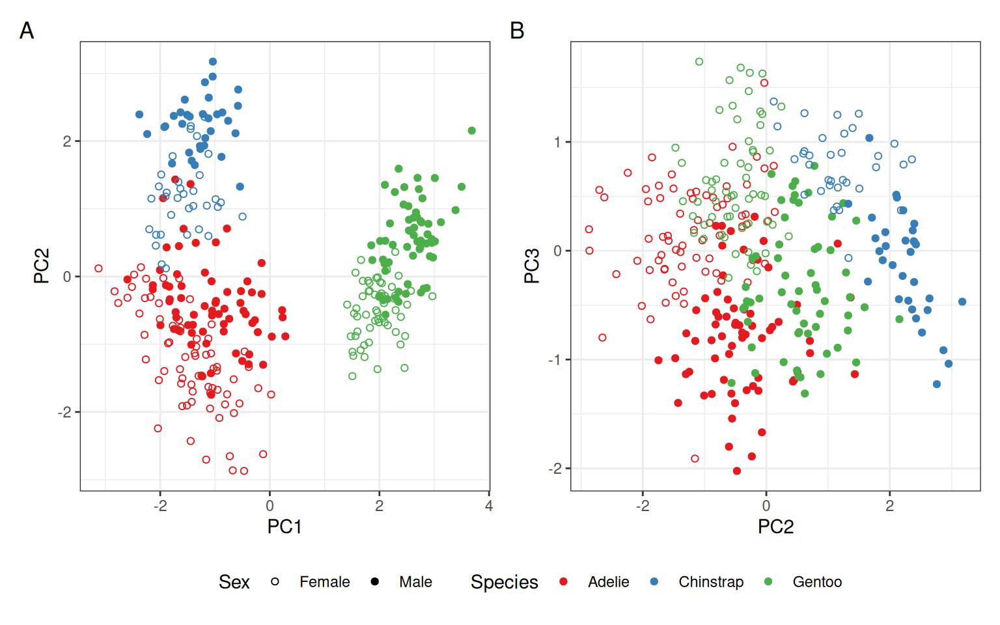
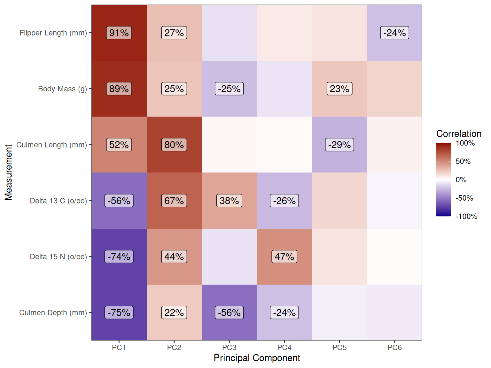
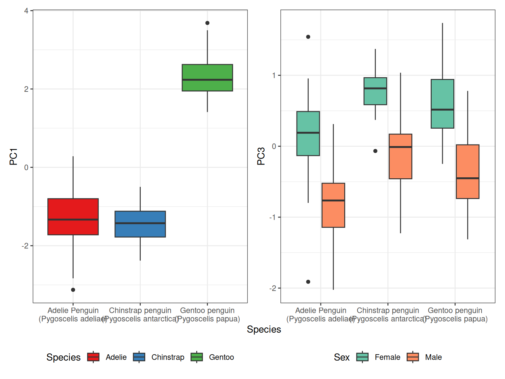
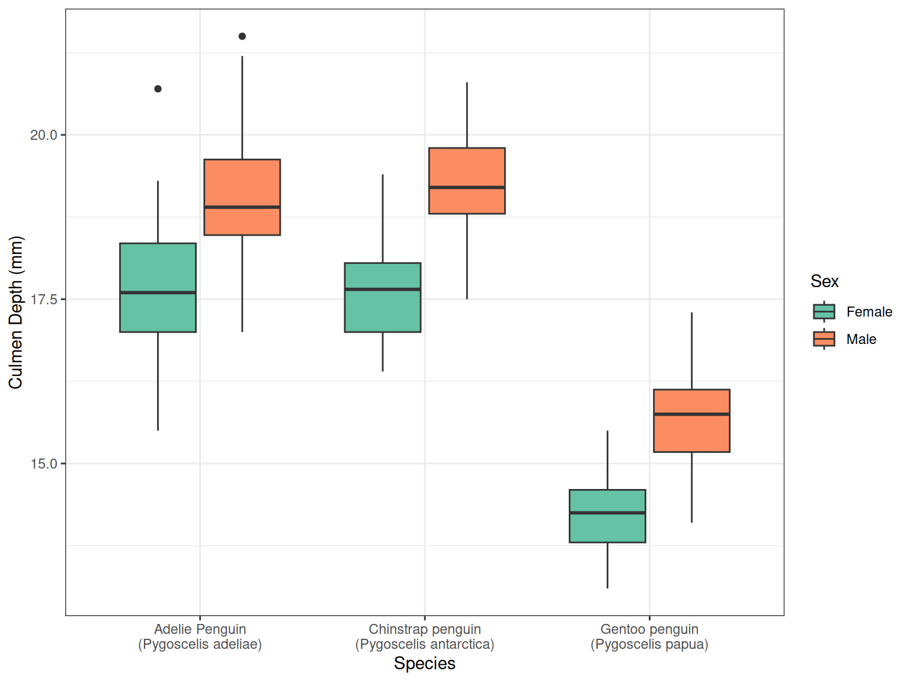

library(tidyverse)
library(corrplot)
library(pheatmap)
library(scales)
library(patchwork)
library(ggcorrplot)
library(ggbiplot)
library(plotly)
library(palmerpenguins)
theme_set(theme_bw())Extended Visualisations In R
RAdelaide 2025
Dr Stevie Pederson
Black Ochre Data Labs
Telethon Kids Institute
Telethon Kids Institute
July 10, 2025
Additional Key Visualisations
Introduction
- Beyond all variations of regression and ggplot visualisations
- Principal Component Analysis
- Correlations
- Heatmaps
Correlations
- Assessing correlations between variables is extremely common
- Interpretation is intuitive for numeric variables
- Not clear for factors \(\implies\) maybe if ordered?
- Pearson correlations for Normally-distributed variables
- Spearman correlations \(\implies\) rank-based correlations
- The function
cor()always returns a symmetric matrix- Usually a diagonal of
1\(\implies\) variables correlation with self
- Usually a diagonal of
Correlations
penguin_cor <- penguins |>
## Just select the variables we know are numeric
dplyr::select(ends_with("_mm"), ends_with("_g")) |>
## Remove any rows with missing measurements
dplyr::filter(!if_any(everything(), is.na)) |>
cor()
penguin_cor bill_length_mm bill_depth_mm flipper_length_mm body_mass_g
bill_length_mm 1.0000000 -0.2350529 0.6561813 0.5951098
bill_depth_mm -0.2350529 1.0000000 -0.5838512 -0.4719156
flipper_length_mm 0.6561813 -0.5838512 1.0000000 0.8712018
body_mass_g 0.5951098 -0.4719156 0.8712018 1.0000000Basic Visualisations
corrplotcan make some helpful & simple visualisationsmethod = c("circle", "square", "ellipse", "number", "shade", "color", "pie")type = c("full", "lower", "upper")
- Can’t be saved as an object \(\implies\) only returns the matrix
Limitations of corrplot
- What if we wanted to split correlations by some category
- The below calculates correlations within each sex
penguins %>% ## Using the magrittr allow the piped data to be accessed using `.`
split(f = .$sex) |> ## Split by sex then find correlations
lapply(dplyr::select, ends_with("_mm"), ends_with("_g")) |>
lapply(dplyr::filter, !if_any(everything(), is.na)) |>
lapply(cor)$female
bill_length_mm bill_depth_mm flipper_length_mm body_mass_g
bill_length_mm 1.0000000 -0.4263804 0.5714737 0.5812947
bill_depth_mm -0.4263804 1.0000000 -0.7941673 -0.7477697
flipper_length_mm 0.5714737 -0.7941673 1.0000000 0.8848250
body_mass_g 0.5812947 -0.7477697 0.8848250 1.0000000
$male
bill_length_mm bill_depth_mm flipper_length_mm body_mass_g
bill_length_mm 1.0000000 -0.3952939 0.6626541 0.4767611
bill_depth_mm -0.3952939 1.0000000 -0.7162006 -0.7554917
flipper_length_mm 0.6626541 -0.7162006 1.0000000 0.8654987
body_mass_g 0.4767611 -0.7554917 0.8654987 1.0000000Limitations of corrplot
par(mfrow = c(1, 2)) # Layout two columns and one row
penguins %>% ## Using the magrittr allow the piped data to be accessed using `.`
split(f = .$sex) |> ## Split by sex then find correlations
lapply(dplyr::select, ends_with("_mm"), ends_with("_g")) |>
lapply(dplyr::filter, !if_any(everything(), is.na)) |>
lapply(cor) |>
lapply(corrplot, diag = FALSE, method = "number")A ggplot-based Alternative
A ggplot-based Alternative
- We know how to make this look a bit more professional
DIY Correlation Plots
- Realistically we can do it ourselves
- Gives complete control over everything
- To cluster variables \(\implies\) use
hclust()- Return a vector of variables in order
- How they would appear on a dendrogram
DIY Correlation Plots
penguin_cor|>
## Coerce the matrix to a tibble, setting the rownames as `x`
as_tibble(rownames = "x") |>
## Now pivot to long form
pivot_longer(contains("_"), names_to = "y", values_to = "Correlation") |>
## Optionally remove the diagonal
dplyr::filter(x != y) |>
## Set the factor levels using the output of hclust
mutate(across(all_of(c("x", "y")), \(x) fct(x, levels = cor_lab))) # A tibble: 12 × 3
x y Correlation
<fct> <fct> <dbl>
1 bill_length_mm bill_depth_mm -0.235
2 bill_length_mm flipper_length_mm 0.656
3 bill_length_mm body_mass_g 0.595
4 bill_depth_mm bill_length_mm -0.235
5 bill_depth_mm flipper_length_mm -0.584
6 bill_depth_mm body_mass_g -0.472
7 flipper_length_mm bill_length_mm 0.656
8 flipper_length_mm bill_depth_mm -0.584
9 flipper_length_mm body_mass_g 0.871
10 body_mass_g bill_length_mm 0.595
11 body_mass_g bill_depth_mm -0.472
12 body_mass_g flipper_length_mm 0.871DIY Correlation Plots
p <- penguin_cor|>
## Coerce the matrix to a tibble, setting the rownames as `x`
as_tibble(rownames = "x") |>
## Now pivot to long form
pivot_longer(contains("_"), names_to = "y", values_to = "Correlation") |>
## Optionally remove the diagonal
dplyr::filter(x != y) |>
## Set the factor levels using the output of hclust
mutate(across(all_of(c("x", "y")), \(x) fct(x, levels = cor_lab))) |>
## Pass to ggplot
ggplot(aes(x, y)) +
geom_raster(aes(fill = Correlation)) +
geom_label(
aes(label = Correlation),
data = . %>% mutate(Correlation = percent(Correlation, accuracy = 1)),
size = 4, fill = "#FFFFFF99"
)
pDIY Correlation Plots

Now Complete the Figure
p +
scale_fill_gradient2(
low = "darkblue", high = "darkred", limits = c(-1, 1),
labels = percent_format(accuracy = 1)
) +
scale_x_discrete(
expand = expansion(0, 0),
labels = \(x) {
str_remove_all(x, "_[gm]+$") |> str_replace_all("_", " ") |> str_to_title()
}
) +
scale_y_discrete(
expand = expansion(0, 0),
labels = \(x) {
str_remove_all(x, "_[gm]+$") |> str_replace_all("_", " ") |> str_to_title()
}
) +
theme(panel.grid = element_blank(), axis.title = element_blank())Now Complete the Figure

Saving As a Function
my_corrplot <- function(x, ...) {
## Get the labels in clustered order
labs <- hclust(dist(x))$labels
## Define a function to tidy labels
my_label_fun <- \(x) str_remove_all(x, "_[gm]+$") |> str_replace_all("_", " ") |> str_to_title()
## Coerce to a tibble
tbl <- x |>
as_tibble(rownames = "x") |>
pivot_longer(contains("_"), names_to = "y", values_to = "Correlation") |>
dplyr::filter(x != y) |>
mutate(across(all_of(c("x", "y")), \(x) fct(x, levels = labs)))
## Create the basic plot
ggplot(tbl, aes(x, fct_rev(y))) + ## Note that fct_rev will change the diagonal
geom_raster(aes(fill = Correlation)) +
geom_label(
aes(label = Correlation),
data = . %>% mutate(Correlation = percent(Correlation, accuracy = 1)),
size = 4, fill = "#FFFFFF99"
) +
scale_fill_gradient2(
low = "darkblue", high = "darkred", limits = c(-1, 1), labels = percent_format(accuracy = 1)
) +
scale_x_discrete(expand = expansion(0, 0), labels = my_label_fun) +
scale_y_discrete(expand = expansion(0, 0), labels = my_label_fun)
}Apply To Each Cohort
- First we’ll split the data again
- Then we’ll create each figure saving as a list of figures
Using Patchwork
- The package
patchworkallows for multi-plot layouts
## Optionally add a title to each individual figure
names(cor_by_sex) |>
lapply(\(x) cor_by_sex[[x]] + ggtitle(x)) |>
## Pass to `patchwork::wrap_plots()` to place into a single figure
wrap_plots() +
## Define the layout and collect any similar axes/legends
plot_layout(guides = "collect", axes = "collect", nrow = 1) +
## Add capital letters to each panel
plot_annotation(tag_levels = "A") &
## Themes can be added to all figures using the `&` as above
theme(
legend.position = "bottom", panel.grid = element_blank(),
axis.title = element_blank()
)Using Patchwork

Using pheatmap
- A final useful package is
pheatmap- Widely used beyond correlations
- Not
ggplot2based
- Heavily customisable
- Allows for dendrograms on either or both axes
- Can take a bit of fiddling
- Notice the colour gradient is not centred at zero!
- Extremely common issue with
pheatmap()
- Extremely common issue with
Using pheatmap
- The best option is to create a manual palette
# Create a colour gradient with 101 colours
heat_col <- colorRampPalette(c("skyblue3", "white", "indianred2"))(101)
pheatmap(
penguin_cor,
## Control the appearance of correlations
display_numbers = TRUE, number_color = "black", fontsize_number = 12,
## Now place the breaks symmetrically across the range of the data
## with length matching the provided palette
breaks = seq(-1, 1, length.out = length(heat_col)),
color = heat_col
)Using pheatmap

Brief Comments
- The above provides multiple strategies for correlations and heatmaps
- The package
ComplexHeatmapis widely used when including annotations- Would take half a day to demonstrate
- Also sets the stage for PCA
Principal Component Analysis
Principal Component Analysis
- PCA is very heavily used across many fields
- Is an unsupervised technique
- Naive to any pre-defined groups or data structures
- PLS is an analogous supervised technique

- Identifies direction(s) of maximal variance in multi-dimensional data
- Successive components are orthogonal
- In 2D super easy to imagine
- Data is rotated around components
Penguins Raw
- Let’s work on the complete (raw) penguins dataset
- 2-additional measurements (\(\Delta N_{15}\) & \(\Delta C_{13}\))
- Slightly different column names
- Can generate identifiers for each set of measurements
Rows: 344
Columns: 17
$ studyName <chr> "PAL0708", "PAL0708", "PAL0708", "PAL0708", "PAL…
$ `Sample Number` <dbl> 1, 2, 3, 4, 5, 6, 7, 8, 9, 10, 11, 12, 13, 14, 1…
$ Species <chr> "Adelie Penguin (Pygoscelis adeliae)", "Adelie P…
$ Region <chr> "Anvers", "Anvers", "Anvers", "Anvers", "Anvers"…
$ Island <chr> "Torgersen", "Torgersen", "Torgersen", "Torgerse…
$ Stage <chr> "Adult, 1 Egg Stage", "Adult, 1 Egg Stage", "Adu…
$ `Individual ID` <chr> "N1A1", "N1A2", "N2A1", "N2A2", "N3A1", "N3A2", …
$ `Clutch Completion` <chr> "Yes", "Yes", "Yes", "Yes", "Yes", "Yes", "No", …
$ `Date Egg` <date> 2007-11-11, 2007-11-11, 2007-11-16, 2007-11-16,…
$ `Culmen Length (mm)` <dbl> 39.1, 39.5, 40.3, NA, 36.7, 39.3, 38.9, 39.2, 34…
$ `Culmen Depth (mm)` <dbl> 18.7, 17.4, 18.0, NA, 19.3, 20.6, 17.8, 19.6, 18…
$ `Flipper Length (mm)` <dbl> 181, 186, 195, NA, 193, 190, 181, 195, 193, 190,…
$ `Body Mass (g)` <dbl> 3750, 3800, 3250, NA, 3450, 3650, 3625, 4675, 34…
$ Sex <chr> "MALE", "FEMALE", "FEMALE", NA, "FEMALE", "MALE"…
$ `Delta 15 N (o/oo)` <dbl> NA, 8.94956, 8.36821, NA, 8.76651, 8.66496, 9.18…
$ `Delta 13 C (o/oo)` <dbl> NA, -24.69454, -25.33302, NA, -25.32426, -25.298…
$ Comments <chr> "Not enough blood for isotopes.", NA, NA, "Adult…Penguins Raw
- Create a new matrix for our analysis
- Need complete sets of measurements
penguin_mat <- penguins_raw |>
## Combine study-name and individual IDs for unique identifiers
unite(id, studyName, `Individual ID`, sep = "_") |>
## Select the new IDs and the columns we want
dplyr::select(
id, contains("(mm)"), contains("(g)"), starts_with("Delta")
) |>
## Remove any incomplete rows
dplyr::filter(!if_any(everything(), is.na)) |>
## Coerce to a data.frame so we can add rownames
as.data.frame() |>
column_to_rownames("id") |>
## Now coerce to a matrix
as.matrix()Penguins Raw
Culmen Length (mm) Culmen Depth (mm) Flipper Length (mm)
PAL0708_N1A2 39.5 17.4 186
PAL0708_N2A1 40.3 18.0 195
PAL0708_N3A1 36.7 19.3 193
PAL0708_N3A2 39.3 20.6 190
PAL0708_N4A1 38.9 17.8 181
PAL0708_N4A2 39.2 19.6 195
Body Mass (g) Delta 15 N (o/oo) Delta 13 C (o/oo)
PAL0708_N1A2 3800 8.94956 -24.69454
PAL0708_N2A1 3250 8.36821 -25.33302
PAL0708_N3A1 3450 8.76651 -25.32426
PAL0708_N3A2 3650 8.66496 -25.29805
PAL0708_N4A1 3625 9.18718 -25.21799
PAL0708_N4A2 4675 9.46060 -24.89958Principal Component Analysis
- PCA expects variables to be on comparable scales
scale. = TRUEwill scale all column variances to 1- This is not
TRUEby default but should be - Will significantly impact results
different scales \(\implies\) bias in variance measures
- This is not
center = TRUEwill centre the data to mean = 0- This is
TRUEby default
- This is
Principal Component Analysis
- Each component captures a decreasing proportion of the variance
- Often the first few indicate some kind of structure
- Later components just capture noise
Principal Component Analysis
screeplot()shows these components as a barplot (base graphics)
Principal Component Analysis
biplot()shows rotated points- Also shows associations between components and columns
Principal Component Analysis
Principal Component Analysis
penguin_pca |>
ggbiplot(
## Annotations for colours need to be extracted from the original dataset
groups = tibble(id = rownames(penguin_mat)) |>
separate(id, c("studyName", "Individual ID")) |>
left_join(penguins_raw) |>
pluck("Species"),
## Ellipses can also be added. This will use both colour and fill
ellipse = TRUE, ellipse.alpha = 0.1
) +
scale_colour_brewer(palette = "Set1", labels = \(x) str_extract(x, "^[:alpha:]+")) +
scale_fill_brewer(palette = "Set1", labels = \(x) str_extract(x, "^[:alpha:]+")) +
labs(colour = "Species", fill = "Species")Principal Component Analysis

Using broom:tidy()
- My preferred approach is
broom::tidy()
\(\implies\) take control of all plots & questions
# A tibble: 1,980 × 3
row PC value
<chr> <dbl> <dbl>
1 PAL0708_N1A2 1 -1.65
2 PAL0708_N1A2 2 -0.0297
3 PAL0708_N1A2 3 0.757
4 PAL0708_N1A2 4 -0.444
5 PAL0708_N1A2 5 0.593
6 PAL0708_N1A2 6 0.294
7 PAL0708_N2A1 1 -1.06
8 PAL0708_N2A1 2 -0.706
9 PAL0708_N2A1 3 0.424
10 PAL0708_N2A1 4 -0.805
# ℹ 1,970 more rowsUsing broom:tidy()
- First make a
tibble\(\rightarrow\) add the original data
penguin_pca_tbl <- penguin_pca |>
broom::tidy() |>
## Pivot every component into it's own column
pivot_wider(names_from = "PC", values_from = "value", names_prefix = "PC") |>
## Separate the IDs back to their original columns
separate(row, c("studyName", "Individual ID")) |>
## Join the original data
left_join(penguins_raw) |>
## Get rid of any with missing data from the Sex column
dplyr::filter(!is.na(Sex))Using broom:tidy()
Rows: 324
Columns: 23
$ studyName <chr> "PAL0708", "PAL0708", "PAL0708", "PAL0708", "PAL…
$ `Individual ID` <chr> "N1A2", "N2A1", "N3A1", "N3A2", "N4A1", "N4A2", …
$ PC1 <dbl> -1.6538249, -1.0621339, -1.7711380, -1.8260138, …
$ PC2 <dbl> -0.02966016, -0.70641500, -0.72817899, -0.335972…
$ PC3 <dbl> 0.756659771, 0.423557638, -0.275208645, -0.77008…
$ PC4 <dbl> -0.44384517, -0.80504196, -0.61161379, -1.077832…
$ PC5 <dbl> 0.5927180674, -0.3272281374, 0.3327898678, -0.01…
$ PC6 <dbl> 0.294391317, -0.636229322, -0.549896841, -0.3035…
$ `Sample Number` <dbl> 2, 3, 5, 6, 7, 8, 15, 17, 18, 19, 20, 21, 22, 23…
$ Species <chr> "Adelie Penguin (Pygoscelis adeliae)", "Adelie P…
$ Region <chr> "Anvers", "Anvers", "Anvers", "Anvers", "Anvers"…
$ Island <chr> "Torgersen", "Torgersen", "Torgersen", "Torgerse…
$ Stage <chr> "Adult, 1 Egg Stage", "Adult, 1 Egg Stage", "Adu…
$ `Clutch Completion` <chr> "Yes", "Yes", "Yes", "Yes", "No", "No", "Yes", "…
$ `Date Egg` <date> 2007-11-11, 2007-11-16, 2007-11-16, 2007-11-16,…
$ `Culmen Length (mm)` <dbl> 39.5, 40.3, 36.7, 39.3, 38.9, 39.2, 34.6, 38.7, …
$ `Culmen Depth (mm)` <dbl> 17.4, 18.0, 19.3, 20.6, 17.8, 19.6, 21.1, 19.0, …
$ `Flipper Length (mm)` <dbl> 186, 195, 193, 190, 181, 195, 198, 195, 197, 184…
$ `Body Mass (g)` <dbl> 3800, 3250, 3450, 3650, 3625, 4675, 4400, 3450, …
$ Sex <chr> "FEMALE", "FEMALE", "FEMALE", "MALE", "FEMALE", …
$ `Delta 15 N (o/oo)` <dbl> 8.94956, 8.36821, 8.76651, 8.66496, 9.18718, 9.4…
$ `Delta 13 C (o/oo)` <dbl> -24.69454, -25.33302, -25.32426, -25.29805, -25.…
$ Comments <chr> NA, NA, NA, NA, "Nest never observed with full c…Visualisation Using ggplot2()
Visualisation Using ggplot2()
- Any combination of components can be checked
B <- penguin_pca_tbl |>
ggplot(aes(PC2, PC3)) +
geom_point(
aes(colour = Species, shape = Sex)
) +
scale_colour_brewer(
palette = "Set1",
labels = \(x) str_extract(x, "^[:alpha:]+")
) +
scale_shape_manual(
values = c(1, 19), labels = str_to_title
)
A + B +
plot_layout(guides = "collect") +
plot_annotation(tag_levels = "A") &
theme(legend.position = "bottom")
Visualisation Using ggplot2()
How do we interpret these plots? What does each component capture?
- PC1 seems to separate Gentoo from the other two species
- PC2 seems to separate Adelie from Chinstrap
- PC3 seems separate by Sex
What Measurements Drive Each Component?
- Beyond a
biplot\(\implies\) correlations between PCs and measurements - Make a figure with PCs on the x-axis & variables on the y
- Fill a heatmap using correlations
- Best to only use numeric variables
- Will check our categorical variables later
What Measurements Drive Each Component?
penguin_pca_cors <- penguin_pca_tbl |>
## Select the PCs and numeric variables
dplyr::select(starts_with("PC"), where(is.numeric), -contains("Sample")) |>
## Get the correlations
cor() |>
as_tibble(rownames = "x") |>
## Pivot like we did earlier
pivot_longer(
cols = c(-all_of("x"), starts_with("PC")), names_to = "y", values_to = "cor"
) |>
## Correlations between PCs will always be zero
## Only compare measurements with PCs
dplyr::filter(str_detect(x, "PC"), !str_detect(y, "PC")) |>
## Arrange by highest correlation to see if it looks OK
arrange(x, cor) |>
mutate(y = fct_inorder(y)) What Measurements Drive Each Component?
penguin_pca_cors %>%
ggplot(aes(x, y)) +
geom_raster(aes(fill = cor)) +
geom_label(
aes(label = lab),
data = . %>%
dplyr::filter(abs(cor) > 0.2) %>%
mutate(lab = percent(cor, accuracy = 1)),
size = 4, fill = "#FFFFFF99"
) +
labs(x = "Principal Component", y = "Measurement", fill = "Correlation") +
scale_fill_gradient2(
low = "darkblue", high = "darkred", limits = c(-1, 1),
labels = percent_format(accuracy = 1)
) +
scale_x_discrete(expand = expansion(0, 0)) +
scale_y_discrete(expand = expansion(0, 0)) What Measurements Drive Each Component?

What Measurements Drive Each Component?
A <- penguin_pca_tbl |>
ggplot(aes(Species, PC1)) +
geom_boxplot(aes(fill = Species)) +
scale_x_discrete(labels = label_wrap(25)) +
scale_fill_brewer(
palette = "Set1", labels = \(x) str_extract(x, "^[:alpha:]+")
)
B <- penguin_pca_tbl |>
ggplot(aes(Species, PC3)) +
geom_boxplot(aes(fill = Sex)) +
scale_x_discrete(labels = label_wrap(25)) +
scale_fill_brewer(palette = "Set2", labels = str_to_title)
A + B +
plot_layout(axes = "collect") &
theme(legend.position = "bottom")What Measurements Drive Each Component?

What Measurements Drive Each Component?
- By correlations & checking manually
\(\implies\)does Culmen Depth seprate sexes within each species?
What Measurements Drive Each Component?

Interactive Plots
- The package
plotlycan transform anyggplotobject into an interactive figureplotly::ggplotly()
ggplotly(
penguin_pca_tbl |>
ggplot(
aes(
PC1, `Flipper Length (mm)`,
## Just try adding random aesthetics to see if
## ggplot can handle them
key1 = studyName, key2 = `Individual ID`
)
) +
geom_point(aes(colour = Species, shape = Sex)) +
scale_colour_brewer(
palette = "Set1", labels = \(x) str_extract(x, "^[:alpha:]+")
) +
scale_shape_manual(values = c(21, 19), labels = str_to_title)
)Interactive Plots
Interactive Plots
- Exploring interactively in 3D is great fun
- Rarely useful for a publication or communication
Interactive Plots